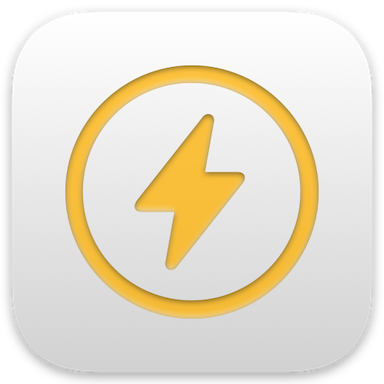

Healthy Scroll
Skips the Reels you told it you don't want to see.
- Open Settings → Apps → Safari → Extensions and turn on Healthy Scroll.
- Set it to Allow on instagram.com and healthyscroll.net.
- Sign in and write what you want skipped.
- Scroll Instagram Reels in Safari.
Sign in at healthyscroll.net
Open Instagram Reels